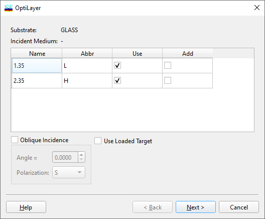

Filter Design - Material Selection
Filter Design - Material Selection

At the first step of the Filter Design procedure, it is necessary to specify exactly two materials that will be used for the filter design. All materials currently loaded into memory are listed here. Note that only materials without absorption can be used in this procedure. Please note that the Substrate and Incident medium should also be non-absorbing. The “Add column” option allows the selection of an additional material that can be used in mirrors or cavities during the optimization step (See Global Integer Search). Select additional materials only if your technology permits deposition of three or more layer materials. The “Oblique Incidence” options allow the design of filters for arbitrary angles of incidence and polarization. The “Use Loaded Target” option allows the user to apply a user-defined target for the WDM filter design. Such targets can include not only transmittance but also other characteristics available in OptiLayer. See also: